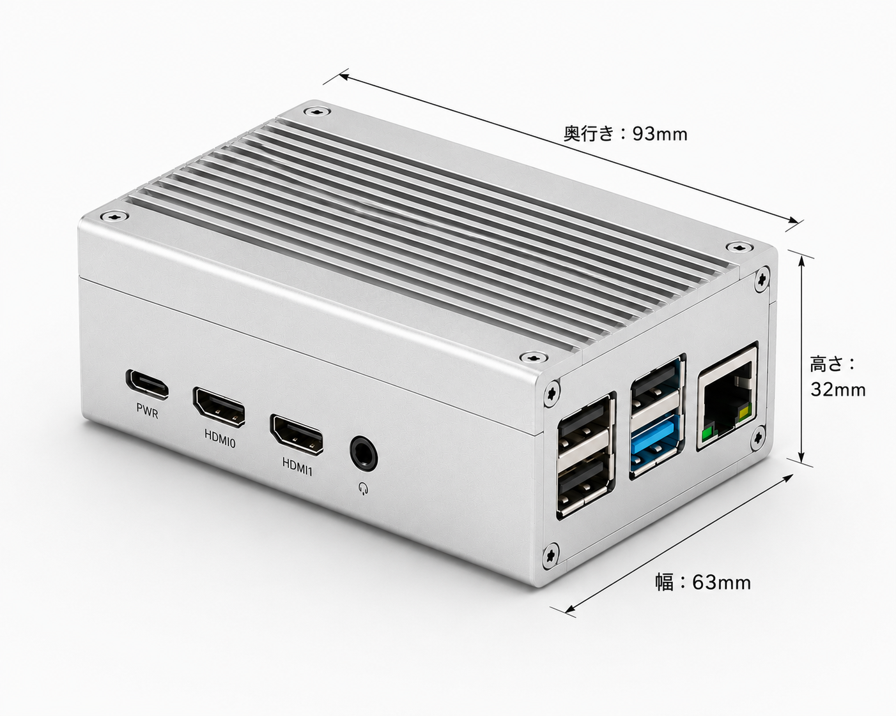
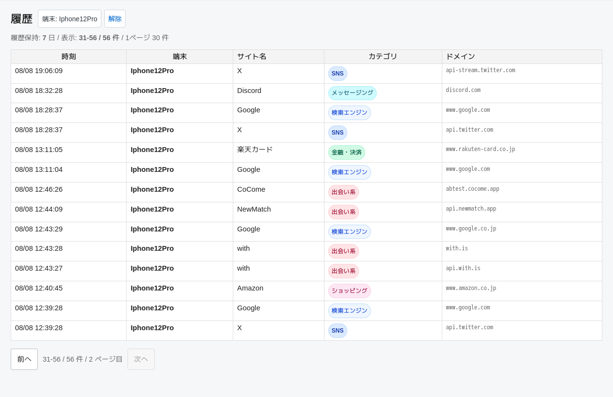

端末ごとに確認
スマートフォン、パソコン、タブレットなど、どの端末からのアクセスかを確認できます。
家庭向けWi-Fi見守り端末
LAN Monitor本体をルーターへ接続して最初に一度設定するだけ。家のWi-Fiにつながる端末が、いつ、どのWebサイトへアクセスしたかを確認できます。

LAN Monitorでできること
むずかしい通信記録を、日常で確認しやすい情報に整理して表示します。
スマートフォン、パソコン、タブレットなど、どの端末からのアクセスかを確認できます。
ドメインだけでなく、YouTubeやAmazonなど、分かりやすいサイト名として表示します。
広告やシステム通信などのノイズをできるだけ減らし、読みやすい履歴に整えます。
シンプルな履歴画面
ブラウザでLAN Monitorを開くだけ。家族で確認しやすいよう、表示項目を4つに絞っています。

こんなご家庭に
LAN Monitorは、家族でネットの使い方を話し合うためのきっかけをつくります。
夜間や休日に、どのようなWebサイトを利用しているかをあとから確認できます。
共有パソコンやタブレットのアクセス先を、ブラウザ履歴だけに頼らず確認できます。
見覚えのない端末や気になるアクセス先がないか、普段から確認できます。
使い始めるまで
設定ガイドでは、画面写真を使って一つずつ説明しています。
LANケーブルを使い、LAN Monitor本体とご家庭のルーターをつなぎます。
ご用意いただいたUSB Type-C電源コードを本体へつなぎ、起動を待ちます。
設定ガイドに沿って、ルーターへLAN MonitorのIPを入力します。
安心のために、正直に
LAN Monitorは、家族の通信内容をすべて見る製品ではありません。
お届けするもの
専門的なソフトウェアの準備は必要ありません。届いたら設定ガイドに沿って接続してください。
よくある質問
ありません。LAN Monitor本体とルーターを設定し、家のWi-Fiにつながる端末をまとめて見守ります。
見えません。表示するのは、おおよその時刻、端末、サイト名、ドメインです。ページ本文、検索キーワード、メッセージ本文は記録しません。
ルーターのDNS設定を変更前の状態へ戻すことで停止できます。詳しい手順は設定ガイドをご確認ください。
購入前の無料確認
まずは、次の使用条件をご確認ください。分からない項目があっても、ルーターの写真があればLINEで確認できます。
 LINE公式アカウント
スマートフォンのカメラで
LINE公式アカウント
スマートフォンのカメラで